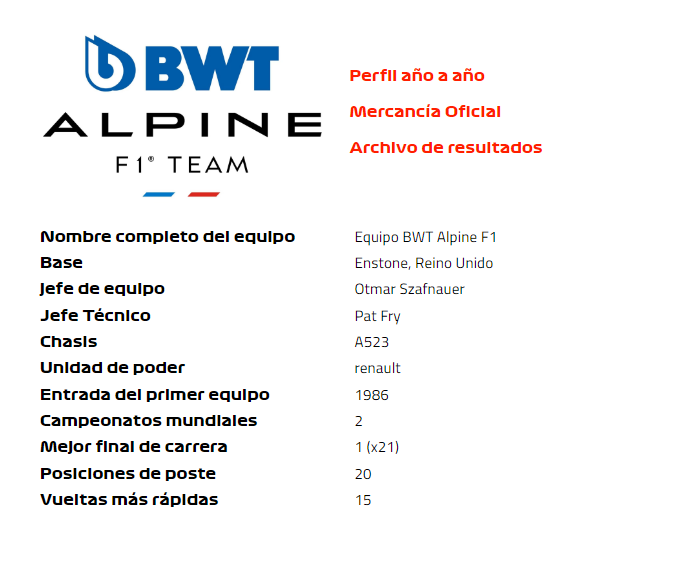
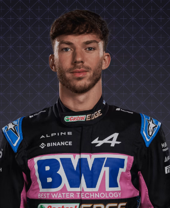
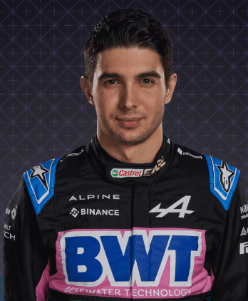

Alpine

En perfil
Alpine puede ser un nombre relativamente nuevo para la Fórmula 1, pero la famosa rama de autos deportivos de Renault tiene mucha herencia en el automovilismo. El cambio de marca del equipo en 2021 marcó el siguiente paso en el renacimiento de la F1 de Renault, que comenzó en 2016 con la adquisición del entonces equipo Lotus. Ganadores de carreras en su nueva apariencia, podios regulares y una inclinación por el título deben ser su próximo objetivo...
2022
Sin podios, pero supera a sus archirrivales McLaren para ascender a P4 en la clasificación final. Fernando Alonso, frustrado por problemas de confiabilidad, se marcha al final de la temporada a Aston Martin, para ser reemplazado en 2023 por Pierre Gasly, formando una alineación de pilotos totalmente franceses con Esteban Ocon.
2021
Una primera victoria en F1 para el nombre Alpine llega en Hungría por cortesía de Esteban Ocon, ayudado por una firme defensa contra un Lewis Hamilton cargado de su compañero de equipo Fernando Alonso, quien también termina en el podio en Qatar.
2020
Tres podios, los primeros desde el regreso de Renault, señalan un importante paso adelante antes del cambio de marca Alpine del equipo y el regreso de Fernando Alonso para 2021.
2019
El progreso en el orden del campeonato se detiene, irónicamente por los nuevos clientes de Renault, McLaren, que los degradan al quinto lugar en la clasificación, a pesar de que Daniel Ricciardo obtuvo su mejor resultado hasta la fecha con P4 en Italia.
Pilotos

Pierre gasley

Esteban Ocón